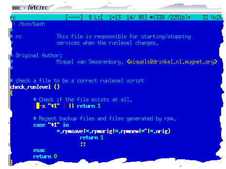

Midnight Commander mod with Colorer-take5 syntax engine

This Midnight Commander build is modified to use
Colorer-take5 as a syntax highlighting engine in standard mc editor.
Features
MC-Colorer supports all basic functionality you have already in Eclipse or FAR Colorer:
- General syntax highlighting with all the features common HRC language base provides.
- Brackets/paired constructions matching, jumping and block marking.
- Plain outliner for the functions list.
- Color styles runtime change with special dialog.
- Syntax type selection dialog.
Building and installing
Source package allows you to rebuild it for any platform MC available on,
and Binary package contains Midnight Commander, compiled for i386 Linux (mdk10).
- Source package doesn't contain colorer-take5 library part, so you should download and compile it separately
(Colorer-take5-linux)
- Binary package already contains compiled colorer-take5 library you need.
You can install it into normal place (/usr/ or /usr/local/) or just unpack somewere.
-
MC binary was compiled with hardcoded /usr/ prefix,
so you should have MC already installed there
or recompile it from the source package with your prefix.
-
In case you have no root rights, just use the provided 'mclr.sh' script to run it.
Or you can install library and mc binary into the appropriate locations and use it
as always.
Whats new in MCColorer 0.9?
- Color style selection dialog from MCEdit menu.
- Outline dialog (Commands/Outline MCEdit menu).
- Syntax selection dialog.
- Upmerge with latest CVS MC revision.
Whats new in MCColorer 0.5?
Editor is now capable to show paired constructions, like it works in eclipse/far versions.
Moreover, two editor menu options were added:
Command/"Select Block" and "Select Block Content".
These allows you to mark with selection current paired construction.
Of course, "Go to matching Bracket" (alt/meta-b) also works with Colorer.
There is no UI settings now, however you can manually change default color
style, colorer uses to highlight the text.
To do this just add this section to your ~/.mc/ini file:
[Colorer]
colorer_hrd_string=nc
Changing it's value you can choose one of available HRD styles (see your
colorer/catalog.xml file for list of available styles).